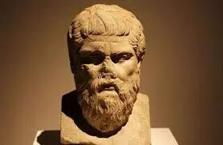
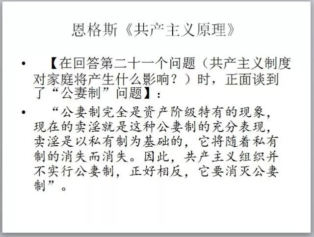
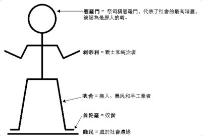

长按二维码
关注高小猫


我曾以为的柏拉图的理想国
说起柏拉图可以算是家喻户晓了。大家都知道柏拉图是苏格拉底的弟子，是伟大的哲学家。至于他的具体理论是什么，我一直都感兴趣，但是却不太清楚。
我在很小的时候，先知道柏拉图是因为一个叫“柏拉图式的爱情”的短语。那时候看这个词的名词解释，说这样的爱情指的是纯精神上的，有爱无性的，理想中的爱情。
后来稍稍长大了一些，看到他的代表作之一是《理想国》，就想当然的以为这个理想国描写的是一个精神上的完美的国度，继而想当然地以为被描述的这个国度会类似于自由主义文化中的理想的那种国度，即一个能使人人平等，人人都能自由地施展自己的潜能，人人生活富足的国度。
实际上的理想国
最近机缘巧合，开始看罗素写的《西方哲学简史》，刚看到苏格拉底，柏拉图，亚里士多德这个大的篇章。篇章中有一章专门讲到柏拉图的乌托邦。令我大吃一惊的是，柏拉图的理想国似乎更像是一个《1984》中描写的那种集权的国家。
首先柏拉图的理想国是有等级制度的，分为三个等级：普通公民，士兵，卫国者。这里的卫国者类似于统治者，只有他们才有政治权利。
为了培养出优秀的卫国者，国家需要对卫国者阶级进行各方面的培养，包括文化，体育教育，经济，宗教等等。
文化，体育，精神教育
一个方面是文化教育方面，这里文化教育所用的教材需要进行严格挑选，甚至给卫国者小孩所能接触的故事只能是官方规定的故事。有几类故事是不被允许的，分别是具有以下这些元素的故事：
第一类是说神坏话的故事，可能是因为这样就没有办法培养卫国者好坏分明的世界观了。柏拉图甚至建议戏剧中的正面形象必须由好人扮演，负面形象则由罪犯扮演。
这很容易让我们联想到之前的样板戏。毛的时期也是出于类似的原因，一方面限制人们讲神化了的领袖的坏话，另外一方面限制人们可以接触到的文化的种类，这样做可能是希望可以借此塑造人们的世界观与价值观。
回过头来看的话，这样的措施真的是在相当程度上非常有效的措施，真的可以达到塑造人民的世界观与价值观的目的，只不过塑造了以后的效果并不是非常理想而已。
第二类是把死亡描写的很可怕的故事。柏拉图的理想国中的青年应该不怕死，而且乐于战死沙场，这样才能英勇地保卫国家，使得国家的军力强大。
似乎历史上对此的效仿者也有不少，比如《1984》中所描写的那个大洋国以及著名的恐怖组织们就采用了这样的一种宣传。
第三类是让人消极的东西。被允许的只有表现勇敢以及和谐的内容。
体育教育方面，卫国者只被允许吃鱼和肉，还必须是烤的，还不能加作料，因为柏拉图认为这样子会让人不会得病。
他们的意志也需要被锻炼，为此会专门给他们安排各种诱惑，比如恐怖，情欲等等，这些安排都是为了让他们经得起诱惑，从而成为一名合格的卫国者。
经济上的共产主义
让我感到惊叹的是，柏拉图居然倡导的是共产主义。他觉得理想国中每个卫国者只能有一处简单地小房子和享受简单的食物，他们互相之间没有贫富差距。
更为极端的是柏拉图认为卫国者的朋友之间也应该实现共产主义，包括妻子，孩子。他还倡导男女平等，认为女性也同样能成为优秀的卫国者。
他认为生育权需要收归国有，男女全部同吃同住，然后在某个节日中抽签决定配对方式然后进行生育。这种配对不是固定的，而是应该以生育能力为基准进行调节，总之一切以生育为第一优先准则。
一旦孩子出生就被带走，因此没有人直到自己的孩子是谁。由于没有人直到自己的父母是谁，因此会认为每一个长辈都是自己的父母。
柏拉图之所以提倡这样做，是因为他觉得这样可以淡化人们的私情，以求从精神上消灭私有主义，彻底实现共产的精神。

宗教上对人民的蒙骗
柏拉图的理想国的宗教是政府用于蒙骗人们的工具。他认为撒谎是政府的特权，甚至有一些谎言应该欺骗所有人，包括统治者。
其中有一个神话最为重要。在这个神话中神用金子造了卫国者，用银子造了士兵，用铜和铁造了普通公民，因此金字造的人管理国家，铜和铁造的人从事劳作，阶级是继承的，这样是合理的。这个神话应该被世世代代灌输给青年，直到被所有人接受。
这个传说与印度的种姓制度惊人地相似。印度的种姓制度仅仅是把金银铜铁换成了头手体脚而已。柏拉图认为只要两个世纪的传承教育就能使得人们深信这个神话。
印度的种姓制度产生于晚期吠陀时期，即公元前900-600年，似乎几百年的时间也就稳定下来了，一直到今天还欣欣向荣。

柏拉图认为的正义
柏拉图认为人人做好自己的事情，不插手别人的事务，这样整个国家就是正义的。这是完全摒弃了个人的自由，完全追求稳定的一种方案。人类历史上对于这种方案有过很多尝试，也有过不少的好例子，比如征服了柏拉图祖国希腊的斯巴达。
最近水库论坛写了一篇《效率和稳定》的文章（#F1880），就讲到了统治者其实应该在人民的自由与国家的稳定之间做出一个适当的权衡。如果给人民以充分的自由，国家往往发展比较快，效率会比较高，国家的竞赛力会比较强。
但是这样往往国家中不稳定的因素会比较多，导致国家的稳定性比较差。国家的稳定性比较差的话，政局就比较容易不稳，统治阶级更加容易被颠覆，这往往是统治阶级不愿意看到的情况。因此英明的统治者需要去权衡这两个方面的因素，使之达到一个最优的平衡。不能说某些平衡就是最佳的平衡，只有最适合某个历史条件的平衡存在。
结语
柏拉图的理想国被后世的人们一一尝试了一遍，而且其中的不少还取得了相当的成功。当然了其中的大部分是不符合我们当代的主流价值观的。
我相信当初的柏拉图一定是怀着最美好的愿望写下他的理想国的，也一定是考虑了各种因素，认为这样的一个国家才是一个会真正富强，让人民安居乐业的国家。可见有好的愿望不一定就能实现好的结果，就算那个愿望出自一个极其有智慧，甚至是超越时代智慧的人。
达尔文镇楼。
长按二维码
关注高小猫